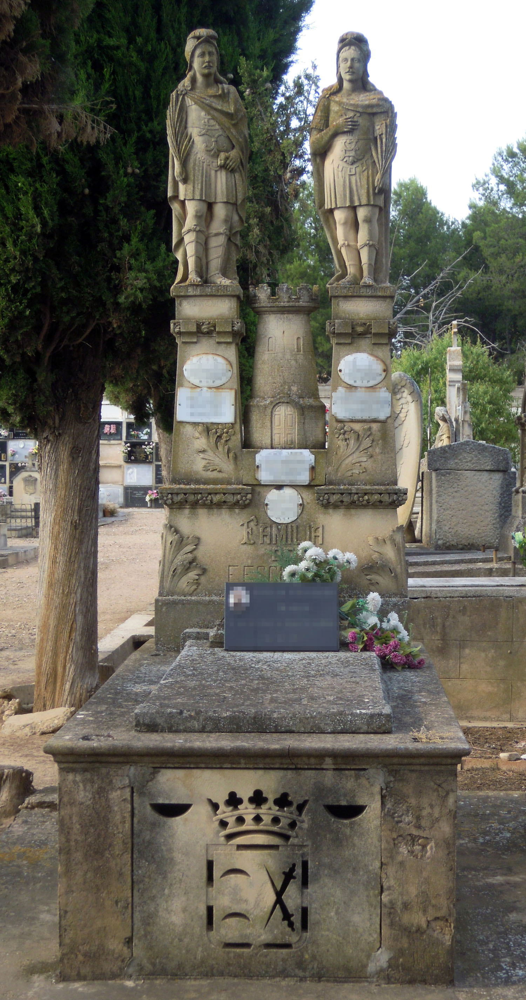
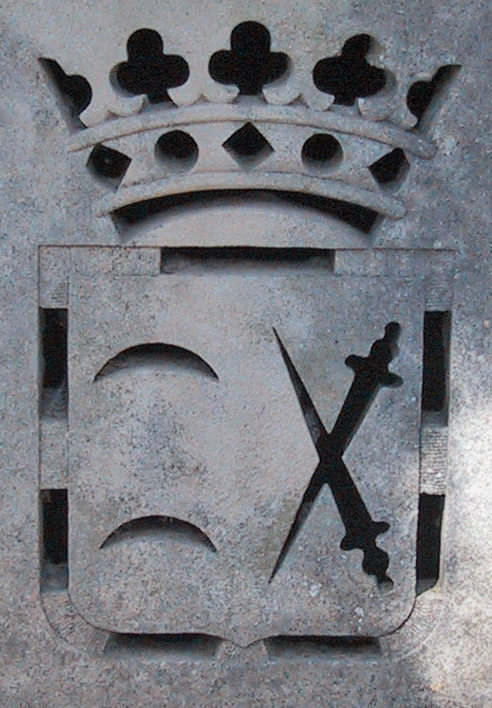
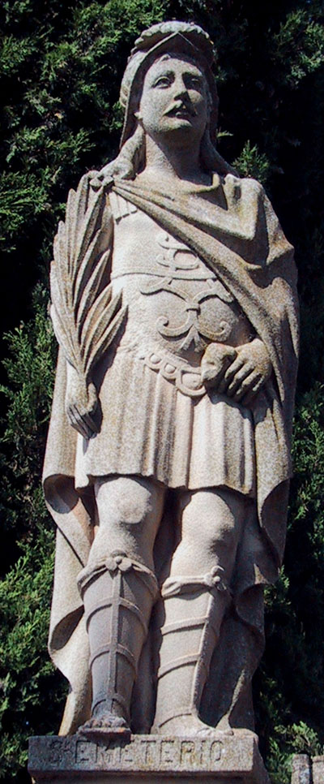
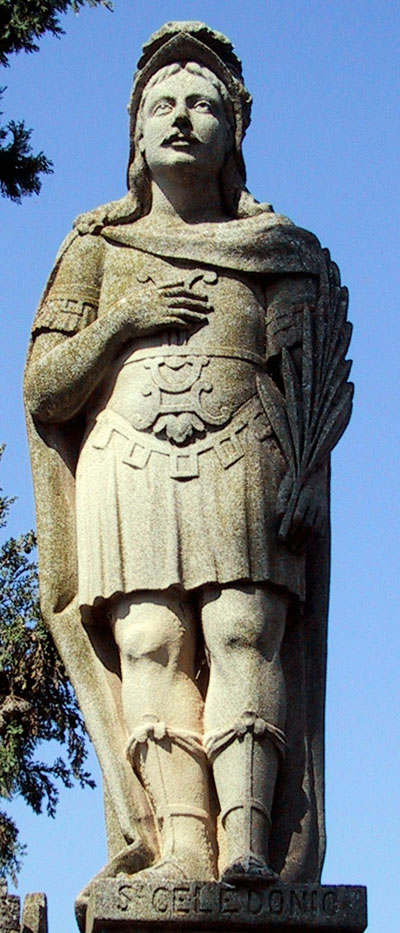
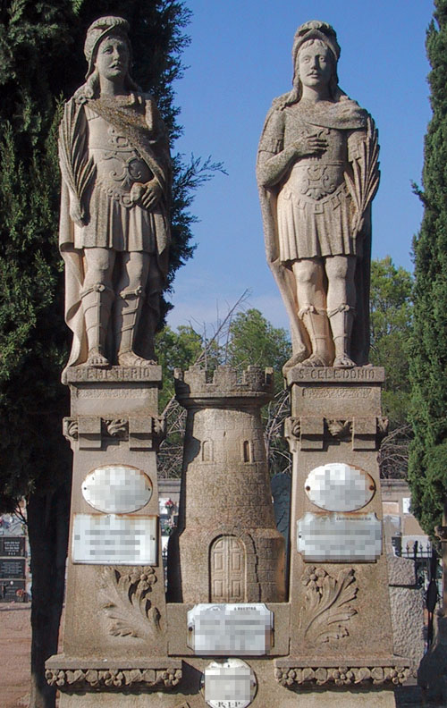
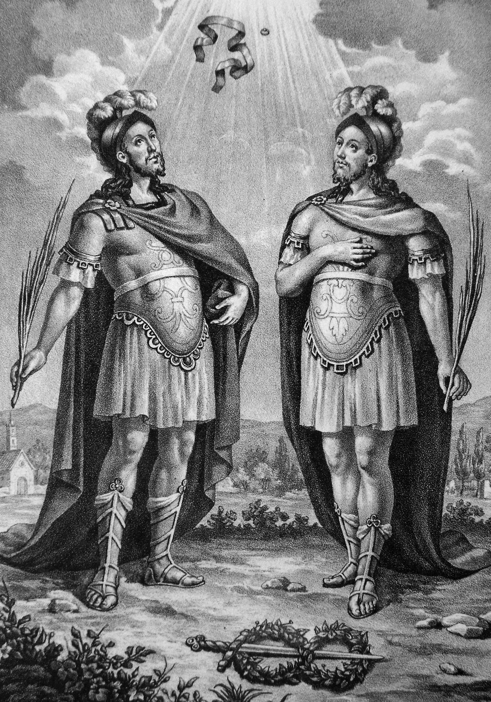

El panteón de Fortunato Escudero Gurrea, que según la inscripción situada en su lado derecho es la "Propiedad nº 134" del cementerio, se encuentra en la zona de Jesús y calle de San Basilio angular con la calle de San Miguel. Es una sepultura que podríamos calificar de localista porque su decoración, tanto heráldica como figurativa, sólo tiene sentido en Calahorra. Es además un caso excepcional ya que una inscripción en la parte trasera de la cabecera informa de la construcción de este monumento: "ESTE PANTEON / FUE COLOCADO EL / 31 DE AGOSTO DE 1923 / SIN PROCESION POR LLOVER".

El comitente, Fortunato Escudero Gurrea (Calahorra, 1876-1958) era hijo de Manuel Escudero Sada y de Inés Gurrea Escorza. Contrajo matrimonio con Lorenza Marín Martínez (1879-1959), hija de Nicanor Marín y Marcelina Martínez, y sobrina del beneficiado catedralicio Julián Martínez y del hojalatero Eulogio Rodríguez Moreno. La pareja estaba avecindada en la Cuesta de las Monjas nº 13 con sus hijos Julián, Manuel, Carmen y Evelia, y Fortunato cambió antes de 1925 su trabajo de labrador por el de empleado .
La estructura del sepulcro es la de un panteón con cabecera monumental que consta de cama y cabecera con decoración escultórica. Está realizado enteramente en piedra, con cama moldurada en la zona superior cubierta con losa de dimensiones más reducidas y decorada con rosetas grabadas en los vértices. El acceso a la cripta inferior se realiza a través de una placa de piedra con el escudo de la ciudad de Calahorra en hueco. Es un escudo partido en palo, con dos lunetas ranversadas y dos espadas puestas en aspa con las puntas a diestra y timbrado con corona ducal o condal. El escudo representado en esta tumba no deja de ser una reinterpretación más simple de la heráldica oficial, más compleja y con un mayor número de elementos, que en los últimos años se ha intentado fijar dado el gran número de variantes existentes. El escudo de Calahorra es de origen medieval y estaba plenamente definido en el siglo XVI. Alude a los Santos Mártires como el emblema más representativo de la ciudad: las dos lunetas en el cantón diestro representan a los Santos Emeterio y Celedonio, mientras que las espadas del siniestro hacen referencia a la historia de la ciudad. El timbre con corona ducal o condal no significa sumisión o vasallaje sino que, ya bien entrado el siglo XX, es sólo un motivo decorativo .


La cabecera se alza sobre la cama. Consta de un basamento rectangular con la inscripción "Familia de F. Escudero", decorado con acantos en los laterales de la zona inferior. También en los lados se desarrolla un friso corrido vegetal de nomeolvides entre hojas bajo la cornisa del remate. Sobre este basamento aparecen imágenes de San Emeterio y San Celedonio flanqueando una torre. Ésta es de planta ovalada, ajustando su forma al espacio que marca la cabecera, y de remate almenado, presentando una puerta en arco de medio punto a modo de acceso en el centro de la parte inferior y dos vanos del mismo tipo en la superior. Sin duda representa la cárcel ciega en la que, según la tradición, fueron retenidos los Santos hasta sufrir martirio en el Arenal calagurritano. Flanquean la torre sendos pilares de sección cuadrada decorados con nomeolvides y pequeñas hojas en relieve en la parte inferior, y rematados con un friso de modillones moldurados alternados con pequeñas plaquitas con acantos en relieve. Sobre los pilares aparecen las imágenes de bulto redondo y tamaño menor que el natural de los Santos Emeterio y Celedonio. Visten como legionarios romanos, con caligae, túnica, subarmalis, lorica, manto y, sobre la cabeza, galea emplumada. La decoración de las loricas presentan diferentes elementos decorativos; las caligae en la imagen de San Emeterio llegan hasta debajo de la rodilla, en tanto que en San Celedonio son más bajas; así mismo, para presentar una pequeña diferencia en ambas efigies, los brazos se disponen en posturas distintas: san Emeterio recoge el manto con la mano izquierda y porta una palma en la derecha en tanto que san Celedonio lleva la palma en la mano izquierda y se lleva la derecha al pecho. A pesar de ello son dos imágenes muy similares que reflejan la iconografía tradicional de los Santos Mártires calagurritanos: hombres jóvenes, con bigote y sin barba, de cabellos largos y ondulados y rostro de facciones suaves e idealizadas, con iris rehundidos buscando un mayor realismo. Tanto el castillo como las esculturas están labradas por la parte trasera, aunque con menor detalle.

Desconocemos el nombre del autor y, aunque las esculturas resultan frías y rígidas, la talla es de calidad, logrando el escultor dotarlas de cierta sensación de movimiento con el sencillo gesto de adelantar un pie. Por otro lado, la decoración vegetal es la habitual en la década de los años 20. La base iconográfica tanto de las imágenes de los Mártires como del escudo que decora el acceso a la cripta se encuentra en un grabado editado a finales del siglo XIX por la Cofradía de los Mártires y que muestra a los Santos en posturas muy similares, mientras sus atributos, el anillo y el pañuelo, ascienden al cielo. El grabado está decorado con una orla vegetal en la que destacan las imágenes de San Marcelo y Santa Nona y el escudo de Calahorra en la parte superior.
[1] Archivo Municipal de Calahorra. Cod. 2.1.4.13. Padrón de 1892; Sig. 441/3, fol. 201 (calle de las Monjas nº 13). Padrón de 1897; Sig. 442/1, fol. 211 (calle de las Monjas nº 13). Padrón de 1901; Sig. 442/3, s/f; calle del Sol nº 95 y calle de las Monjas nº 13. Padrón de 1907; Sig. 443/1, fols. 213 (calle del Sol nº 95) y 264 (calle de las Monjas nº 13). Padrón de 1924-1925; Sig. 444/2, fols. 185 (calle del Sol nº 93) y 305 (calle de las Monjas nº 23).
[2] Ya desde el siglo XVIII el escudo aquí representado coexistió con el de la matrona, tal y como se recoge en el Nobiliario o formulario de armería de don Miguel Salazar y Mendoza, fols. 26 y 31. De las espadas se ha dicho que aluden al carácter guerrero de la ciudad, vencedora (espada con la punta hacia arriba) y vencida por el hambre (espada con la punta hacia abajo) y también que hacen referencia a la historia de Calahorra desde el punto de vista religioso (condición de legionarios y martirio de los Santos) y civil (resistencia de la ciudad). Vid. RUIZ ENCINAR, M. “Realidad y leyenda heráldica en La Rioja: el escudo de Calahorra.” En Kalakorikos. Nº 15, 2010, pags. 121-160.